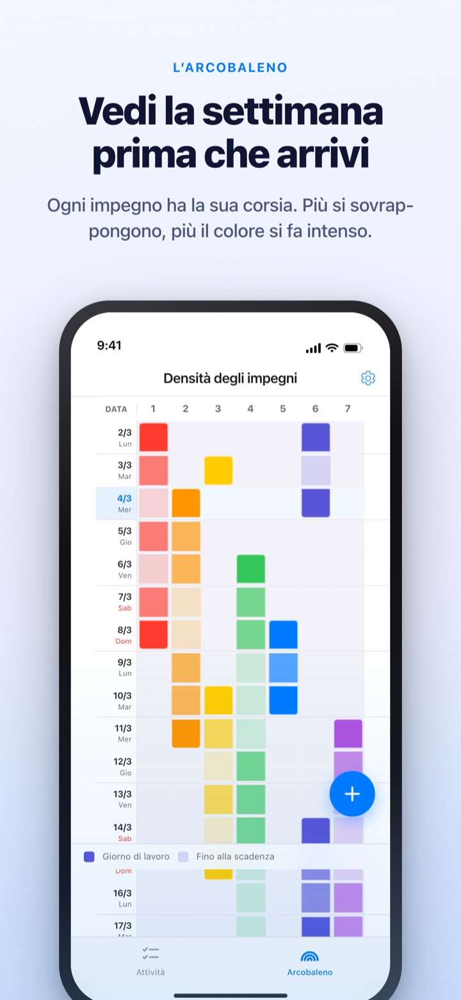
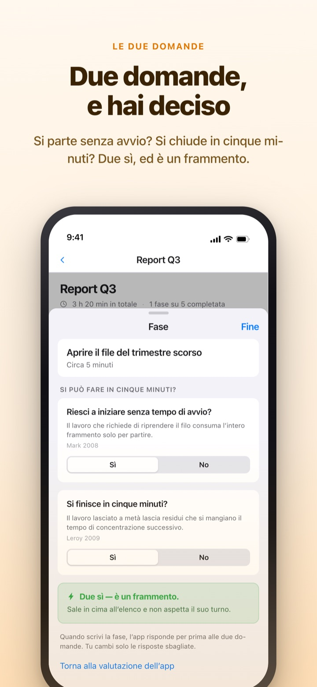
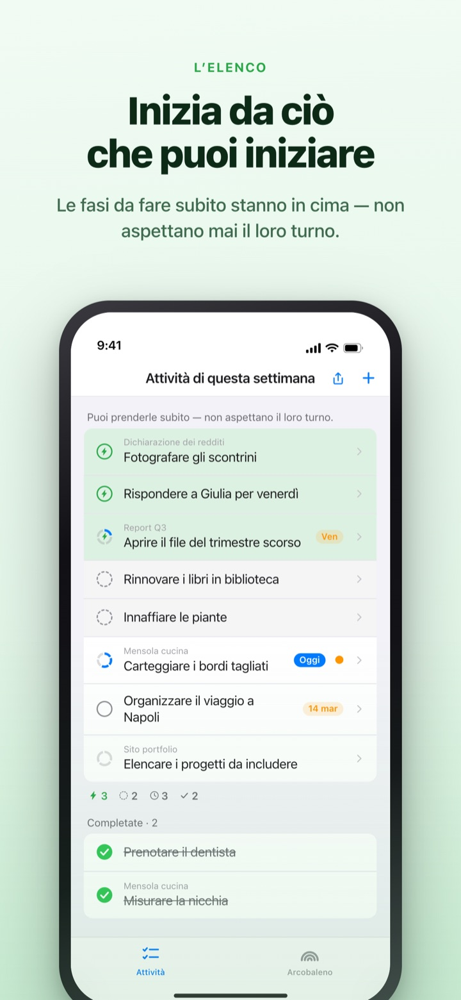
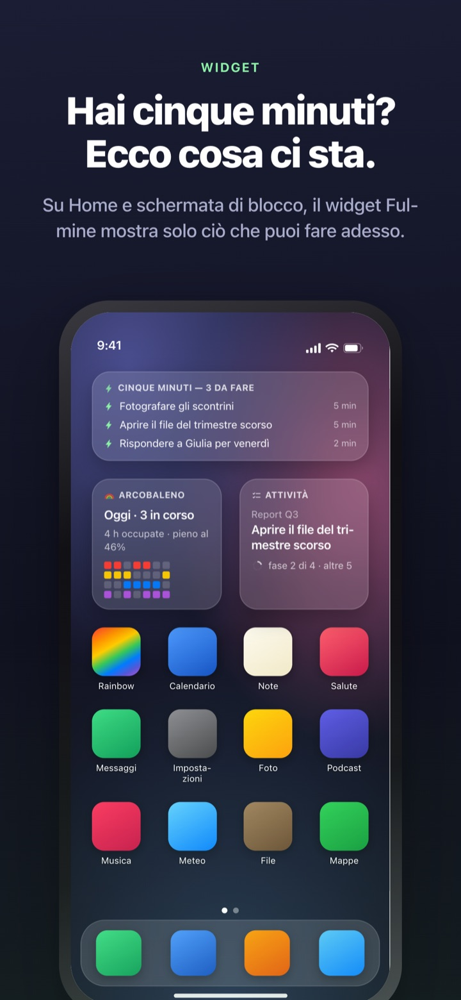

Vedi arrivare la settimana piena.
Sfrutta i cinque minuti che hai.
Più il lavoro si sovrappone, più l’arcobaleno diventa intenso. Spezza un’attività grande in passi e quello che puoi fare in un momento libero ti aspetta già in cima.
Arcobaleno, suddivisione delle attività, timer e sincronizzazione con il Mac sono gratis.

Provalo tu
«Report del T3» è già diviso in cinque passi. Scegline uno, cambia la durata o capovolgi una risposta. Solo un passo con due sì diventa un frammento da fare in cinque minuti.
Il calendario sembra vuoto, eppure la settimana ti toglie il fiato?
Un calendario dice se c’è qualcosa in programma, non quanto ci si accumula sopra. Che tre scadenze cadano nella stessa settimana lo scopri quando ci sei dentro, e i cinque minuti liberi in mezzo se ne vanno a rileggere la lista delle cose da fare. Rainbow of Desire disegna la settimana come una griglia, scurisce dove si sovrappone e mette da parte i passi che stanno in un buco.
Due domande e tutto è chiaro
Quando spezzi un’attività grande, ogni passo riceve due domande. Riesci a iniziare senza tempo di avvio? Si finisce in cinque minuti?
Solo un doppio sì lo rende un frammento. L’app risponde per prima in base alla durata e alle parole, tu capovolgi una risposta solo se è sbagliata.

Un momento libero? Guarda in cima
Scorri un’attività verso destra per darle un fulmine: salta la fila e finisce in cima. Non serve rileggere tutta la lista.
Se i passi si aspettano a vicenda lo decidi una volta per gruppo. In ordine mostra il primo passo da fare, Qualsiasi ordine il frammento che puoi prendere adesso.

Si vede senza aprire l’app
Il timer conta fino alla fine dell’evento e il tempo rimasto compare anche nella Dynamic Island e sulla schermata di blocco.
I widget per Home e schermata di blocco mostrano ciò che stai facendo, ciò che sta in cinque minuti e l’arcobaleno della settimana. (I widget sono Pro)

Si parte in tre passi
- 1
Traccia un evento
Tieni premuta una casella vuota nel giorno d’inizio e tocca il giorno di fine: compare una linea sull’arcobaleno.
- 2
Spezza il lavoro grande
Tocca un’attività, scrivi i passi e scegli una durata. Alle due domande risponde prima l’app.
- 3
Nei buchi guarda in cima
Frammenti e attività con il fulmine si raccolgono in cima senza aspettare il turno.
Cosa vedrai sullo schermo
- Casella scura · casella chiara
- i giorni in cui ci lavori davvero, e il resto fino alla data di fine
- Una riga piena
- un giorno con così tanto in parallelo che un solo ritardo sposta tutto
- Frammento
- sì a entrambe le domande; da prendere quando hai cinque minuti
- Concentrazione breve
- nessun avvio, ma non finisce in un frammento; si chiude in una seduta
- Tempo di concentrazione
- serve un avvio o dura 45 minuti e più; va nel tempo riservato
- Fulmine
- il tuo segno di «subito»; salta in cima
- In ordine · Qualsiasi ordine
- se i passi si aspettano, deciso una volta per gruppo
- Registro del tempo recuperato
- il bilancio della settimana: ciò che resta, il tempo recuperato e il riposo, tenuti separati e mai sommati
Il tempo si somma dal basso: la durata di un’attività è la somma dei suoi passi.
Quello che serve per oggi è gratis
Gratis
- L’arcobaleno (griglia di densità degli impegni)
- Suddivisione in passi e le due domande
- Fulmine e ordine dei passi
- Timer nella Dynamic Island e sulla schermata di blocco
- Sincronizzazione con Rainbow Craft su Mac tramite iCloud
- Il registro delle ultime due settimane
Rainbow Plus · Rainbow Pro
- Plus: statistiche eventi e registro oltre le due settimane
- Pro: tutto Plus, più i widget per Home e schermata di blocco
- Pro: importa da Calendario e mostralo sempre
- Pro: condividi il programma, sola lettura
- Pro: sblocca anche Rainbow Craft Pro su Mac
Ciascuno come abbonamento annuale o acquisto unico a vita
Paghi solo per guardare indietro alle settimane passate e per portare le cose fuori dall’app. Se hai comprato Pro in passato o hai ancora il piano mensile, sei sempre Pro.
Domande frequenti
Serve un account o iCloud?
Se la usi da solo, no. Nessuna registrazione, tutto resta sul dispositivo. Per un altro dispositivo, l’app per Mac o la condivisione, accedi a iCloud.
L’app ha risposto male a una domanda.
Tocca il passo e passa da Sì a No. La tua risposta vale sempre più di quella dell’app. Tocca «Torna alla valutazione dell’app» per restituirgliela. Un passo senza durata non conta come frammento, perché l’app non sa se finisce in cinque minuti.
Posso condividere con qualcuno?
Con un link d’invito condividi il programma in sola lettura (Pro) oppure apri una lista di attività che tu e gli invitati leggete e modificate insieme. Chiunque abbia il link può entrare, quindi mandalo solo a chi vuoi. Non c’entra con In famiglia di Apple.
Vedo gli eventi di Calendario?
Gli eventi dei calendari scelti compaiono sull’arcobaleno e nella vista del giorno (Pro). L’app li legge soltanto e non scrive nulla.
Posso spuntare da un widget?
I widget servono solo a guardare. Toccane uno e si aprono subito le attività: spunta lì.
L’app per Mac si compra a parte?
Rainbow Craft è un’app macOS a sé sul Mac App Store. Con lo stesso account iCloud attività e piani settimanali si sincronizzano da soli, e non costa nulla.
Le mie attività di prima ci sono ancora?
Sì. Attività, passi e durate restano dove sono. Le etichette delle vecchie condizioni di avvio vengono rivalutate dall’app con le due domande.
Dove sono salvati i miei dati?
Non c’è un server. Tutto sta sul tuo dispositivo e nel tuo iCloud privato, dove lo sviluppatore non può vederlo. Niente identificativo pubblicitario, niente posizione. L’app invia solo statistiche d’uso anonime, che non ti identificano e si disattivano in Impostazioni.
Come disdico un abbonamento?
In Impostazioni > Account Apple > Abbonamenti. Si rinnova allo stesso prezzo se non disdici almeno 24 ore prima della fine del periodo. L’acquisto a vita si paga una volta sola.
Ti sei bloccato o qualcosa non torna? Scrivi a leeo@kakao.com. Anche nelle impostazioni dell’app trovi un modo per contattarci.